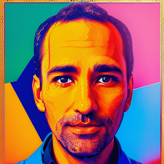
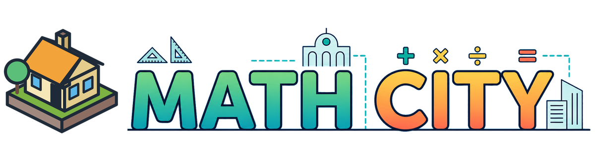
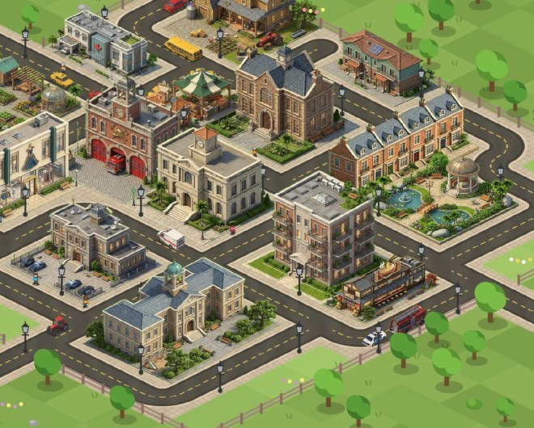
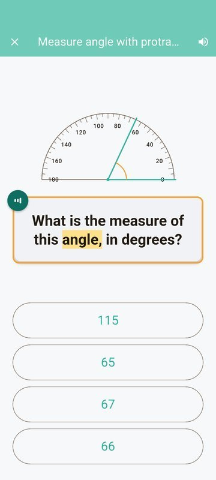
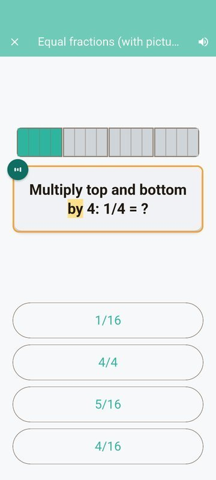
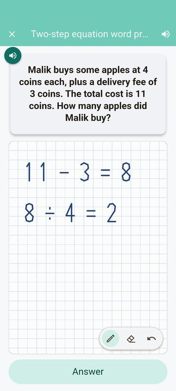
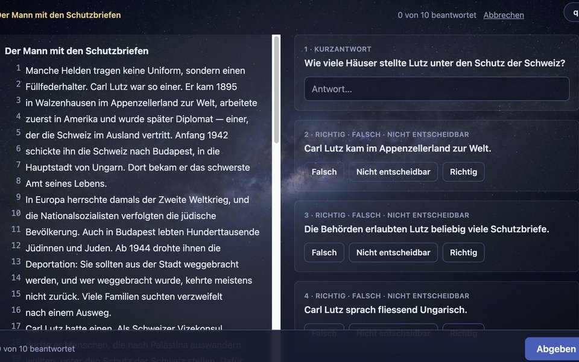
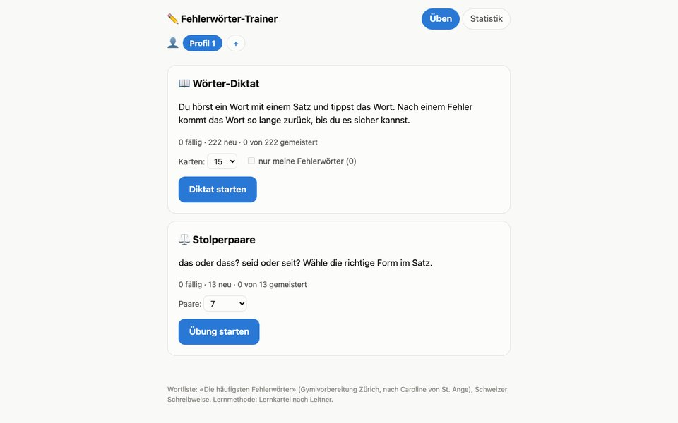
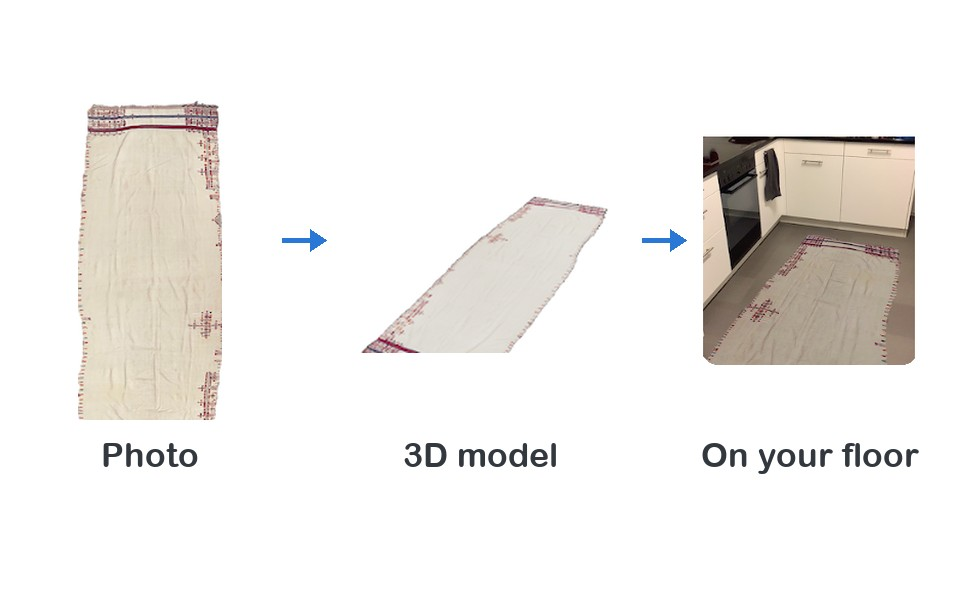

Quarup
Things I build for fun · github.com/quarup
Apps





Math City
Build a whole city by solving math problems. A free math game for kids aged 6 to 14, for iPad, iPhone and Android: over 350 skills from kindergarten to grade 8, read-aloud, a scratch pad, several kids per device. No ads, works offline, collects no data. In private beta.
Try in the browser

Gymi Leitstern
Adaptive German practice for Zürich Gymi prep, played across a night sky: animal constellations whose stars brighten as mastery grows. Runs fully in the browser, no account needed.


More projects
A chess opponent you describe in plain language ("aggressively use your queen") on top of Stockfish. Each bot is a character that chats about the game. Terminal and a small browser app so far; a proper demo is in the works.
macOS script that fixes photo file creation dates to match their EXIF dates.
Voice chat bot that mimics someone's personality even after they're gone from this world. =P